IA-32指令
简言之 指令是指CPU能够认读的机器语言 IA-32指令指IA-32系列CPU使用的指令
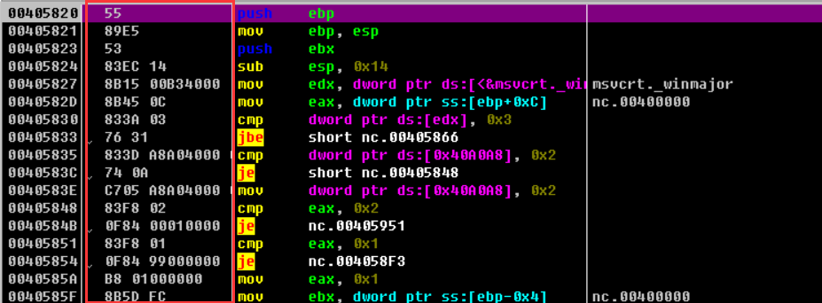
如图 粗线框中的每一行都是一条指令 编程人员使用程序语言（C/C++ java python等）编写程序 而CPU则使用机器语言 编程人员编写的程序源代码需要编译/链接后转换为CPU可以读懂的机器语言
指令格式
如图IA-32指令由三部分组成
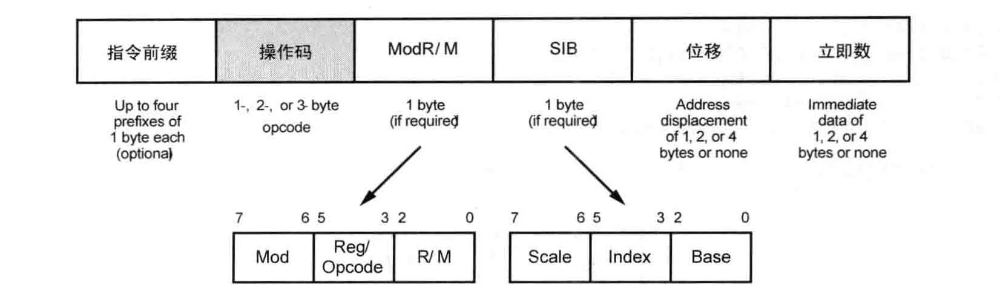
下来对部分指令进行说明
指令前缀
指令前缀（可选项）：指令前缀prefix大小为一个字节，用来辅助说明指令的具体功能，可选项
例如：66：81FE 4746 CMP SI,474加粗字体就是指令前缀，后面跟一个：。
操作码
opand，这个没啥好说的，必选项,大小为1到3字节，通常为一个字节，多字节后面会有说明.例如：66：81FE 4746 CMP SI,474
ModR/M
Mod R/M 大小为一个字节，由三部分组成，分别为 Mod（字节前两位），Reg（字节中间三位），R/M(字节后三位)。Mod R/M的主要功能就是说明操作数的寻址方式，包括寄存器选择，内存操作数的偏移等等。例如：66：81FE 4746 CMP SI,474
SIB
SIB，大小为一个字节，也是用来辅助操作数寻址的，一般用于辅助Mod R/M,当出现基址加变址寻址或者基址寻址时要用到。898424 50020000 Mov [ESP+250]，EAX.
位移
位移也是可选项 操作码的操作数为内存地址时 用来表示位移操作 C705 A8A04000 02000000 mov dword ptr ds:[0x40A0A8], 0x2
立即数
立即数也是一个可选项 操作码的操作数为常量时 该常量就被称为立即数 C705 A8A04000 02000000 mov dword ptr ds:[0x40A0A8], 0x2
指令解析手册
下载IA-32用户手册
为了能够顺利解析IA-32的机器码，我们应该下载Intel的开发手册，然后打印出有关指令解析的图表。下载网址为：http://www.intel.com/products/processor/manuals
打印指令解析手册
table 2-2 32-bit Addressing forms with the ModR/M Byte， page 510
table 2-3 32-bit Addressing forms with the SIB Bytes， page 511
APPENDIX A ，page 487
A.2.1 Codes for Addressing Method
A.2.2 Code for Operand Type
Table A-2 .one –byte Opcode Maps
Table A-3.two-bytes Opcode Maps
pages ：2519-2530
Table A-6 Opcode Extension for one-and Two Opcodes by Group Number
pages：2535-2537
指令解析练习
操作码映射
首先我们解析一个长度为一的操作码1
41 INC ECx
对应的表是Table A-2 .one –byte Opcode Maps
指令：41，将指令拆成4和1，4对应表的行向量，1对应表列向量，如下图:
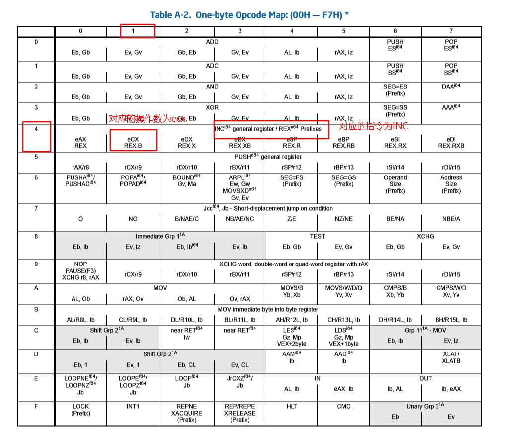
由上图可知41对应的指令为INC ECX,我们可以使用od来印证正确性。如下图：
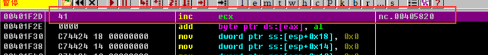
至于为什么用寄存器ECX,是因为IA-32默认使用32位寄存器。
操作数
1 | 68 A0B44000 |
我们先拆分68为6和8还是使用表Table A-2 .one –byte Opcode Maps
来查找操作指令。如下图：
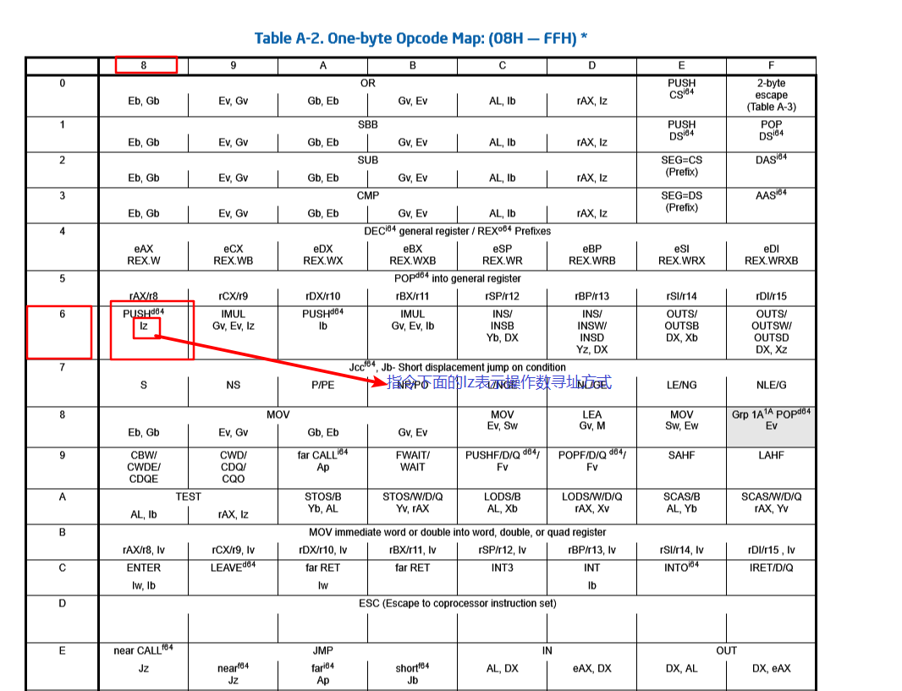
上图可知是push指令，操作数的寻址方式有Iz规定，我们接下来来使用code for Addressing Method和表code for opcode type 来查看具体信息，第一个大写字符I规定了寻址方式，在code for Addressing Method查找对应含义，如下图:
表示这是一个立即数。第二个小写字符z在表code for opcode type 中查找，如下图：
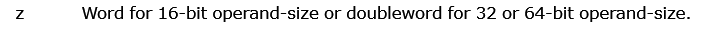
z表示使用的字符大小为字或者双字，由于是在32位系统中默认使用双字（使用单字的情况是使用前缀来说明），故这里是个双字，Iz一起就是表明使用双字立即数，表明指令68 A0B44000中A0B44000就是使用的双字立即数。完整的指令翻译过来就是：
Push 0004B4A0（注意汇编中的数据存储），我们也来使用od验证一下。如下图：
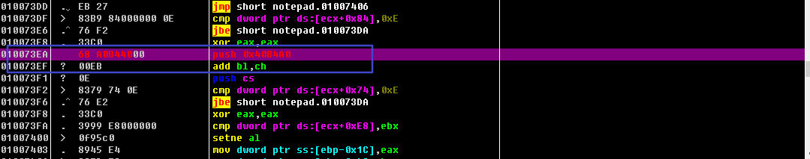
带有Mod R/M的指令
上面两个指令都很简单，除了操作码就是操作数本身，下面来解析带有Mod R/M的指令，现在来看指令89C1。先解析89如下图：
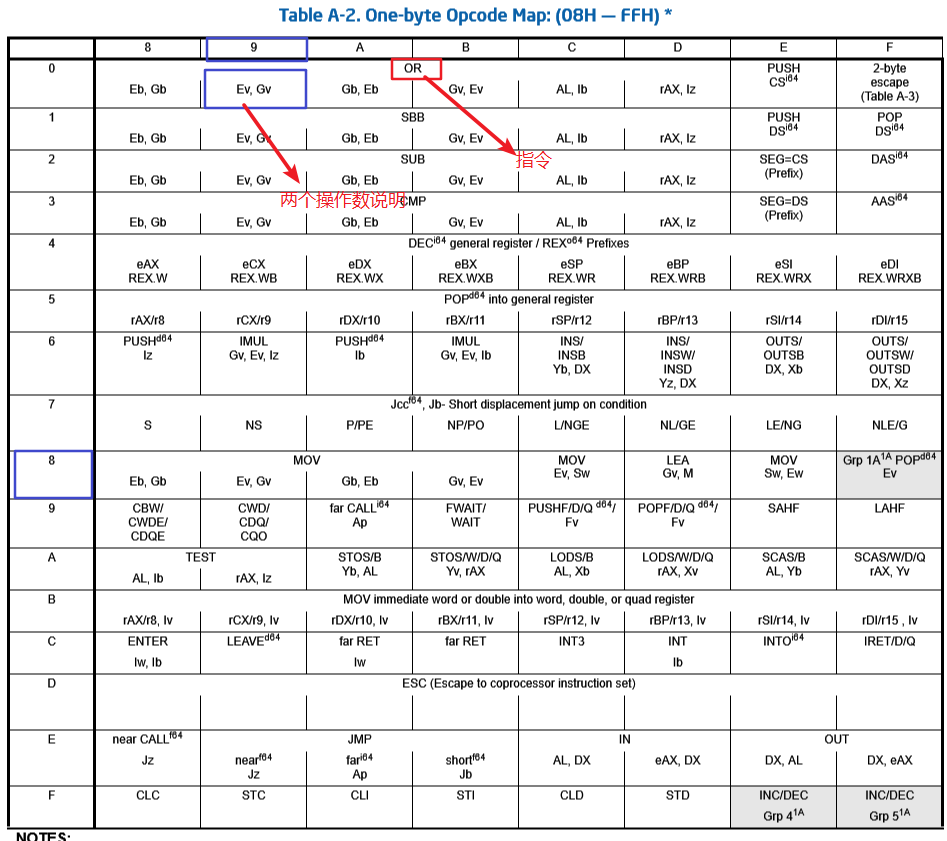
上图可知指令是OR指令，两个操作数的说明分别是Ev和Gv，这两个使用表A.2.1 Codes for Addressing Method和表A.2.2 Code for Operand Type来查看。Ev的查询结果如下图：
这里应该主义的是，E中已经说明了要使用通用寄存器或者内存操作数，并且要使用Mod R/M来进行辅助说明，所以在操作码89后的C1就是ModR/M,Ev统一起来就是可以使用双子寄存器操作数或者双子内存操作数，具体的要使用ModR/M字段来辅助说明。我们把ModR/M字段的内容c1（1100，0001）拆成三部分：Mod：11，Reg：000，R/M：001，下面根据这个信息来查询表table 2-2 32-bit Addressing forms with the ModR/M Byte，如下图：
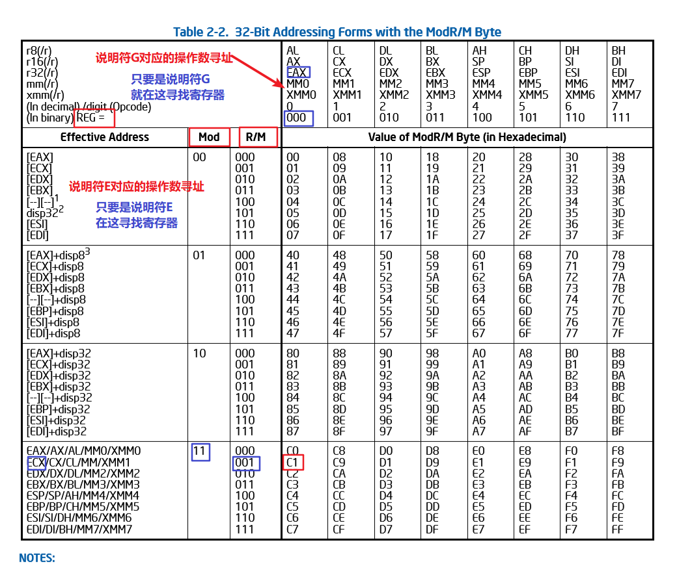
使用三个字段分别找到Ev对应的寄存器是ECX，Gv使用的寄存器是EAX，因此完整指令应该为89C1 OR ECX,EAX,用od验证如下图:
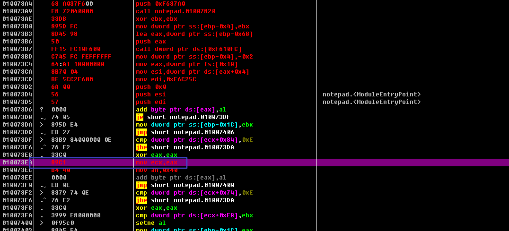
带有Group指令解析
Group指令与ModR/M结合使用。Group给指令带来了更为丰富的变化，也是的指令解析更为复杂。例如：83C3 12,先解析83，如下图：
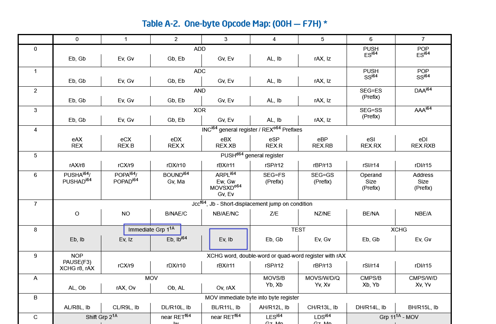
上图可以看出该指令带group指令。对于group指令我们还需查询表Table A-6 Opcode Extension for one-and Two Opcodes by Group Number。我们使用ModR/M（C3=1100,0011）的第二个字段Reg(000)来查询，如下图：
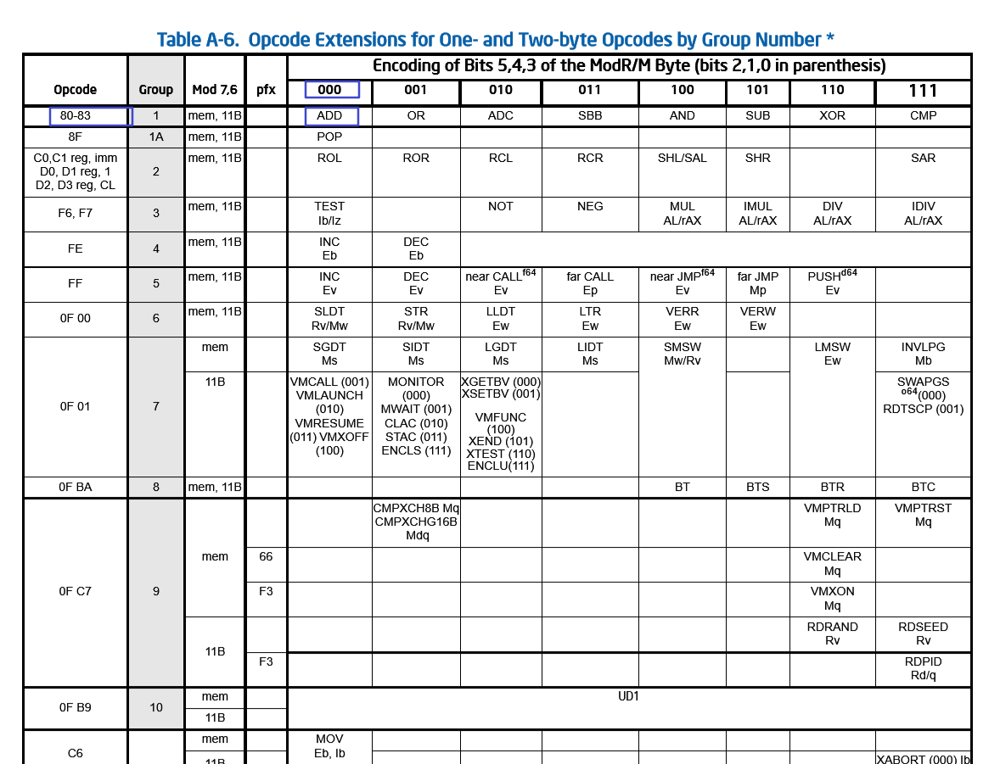
对应的指令为ADD，结合来看指令大致为ADD Ev，Ib，再根据ModR/M字段值C3得出指令为ADD EBX,12。
指令前缀的使用
指令前缀主要来辅助说明操作码的，比如前缀66就会规定指令为16位形式。前缀的形式一般都是：前缀：操作码（这里是显示形式，其实在od中编写不用写符号：但是显示会出现符号：）。
接下来来示范解析带有前缀的指令 66：81FE 3412。前缀66的信息查询也是在表
Table A-2 .one –byte Opcode Maps（单字节操作码查询表）中如下图：
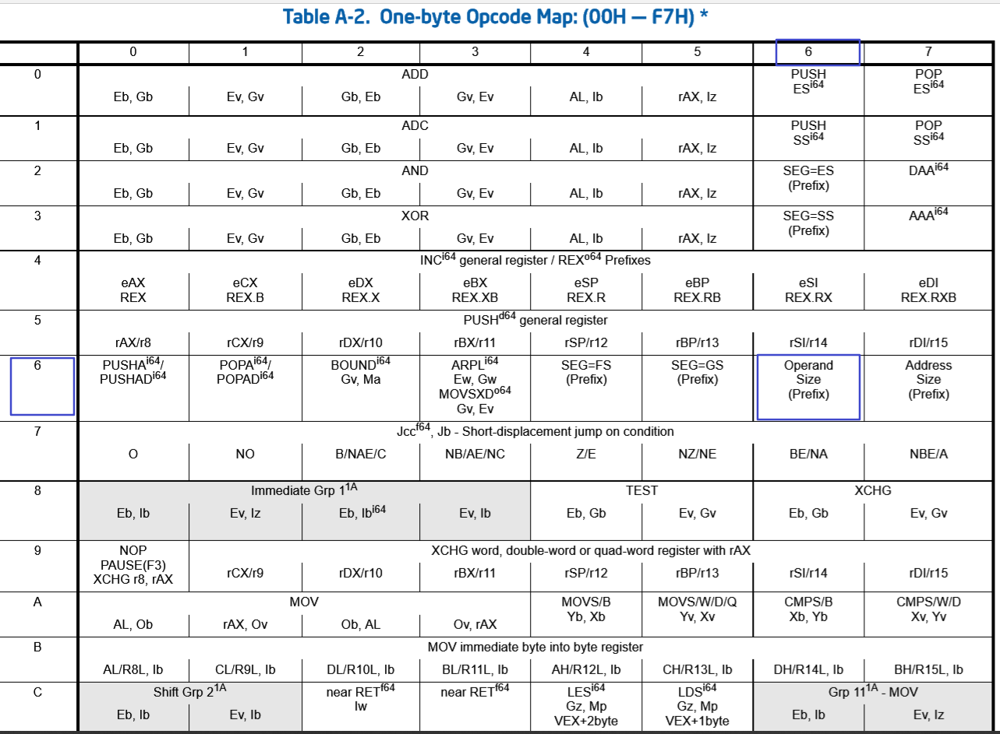
上图表示操作码的size位16位，接下来继续解析81，如下图：
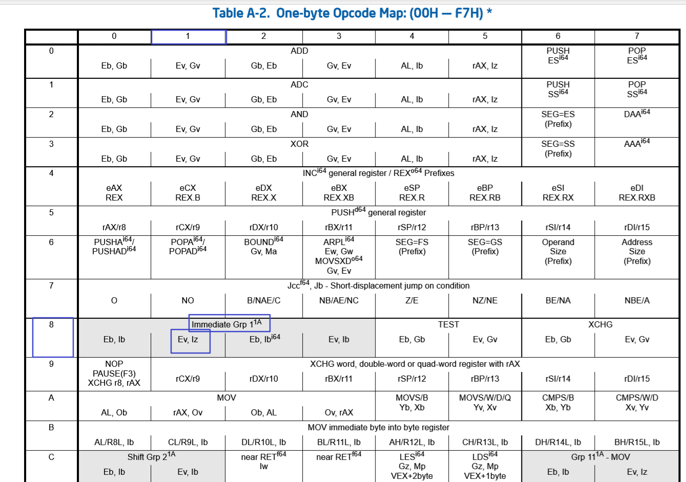
说明还要使用ModR/M（FE=1111，1110）的字段Reg（111）表Table A-6 Opcode Extension for one-and Two Opcodes by Group Number来查询Group信息。如下图：
因此指令的形式是CMP Ev,Ib，由于前缀规定使用16位操作数，所以指令解析为：
66：81FE 3412 CMP SI,1234(指令为16位的)。
双字节操作码的解析
双字节操作码很好分辨，指令的第一个字节为0F，指令映射参考表Table A-3.two-bytes Opcode Maps。接下来我们来解析指令0F85 FA1F0000。先解析0F,查询表Table A-2 .one –byte Opcode Maps可得下图：
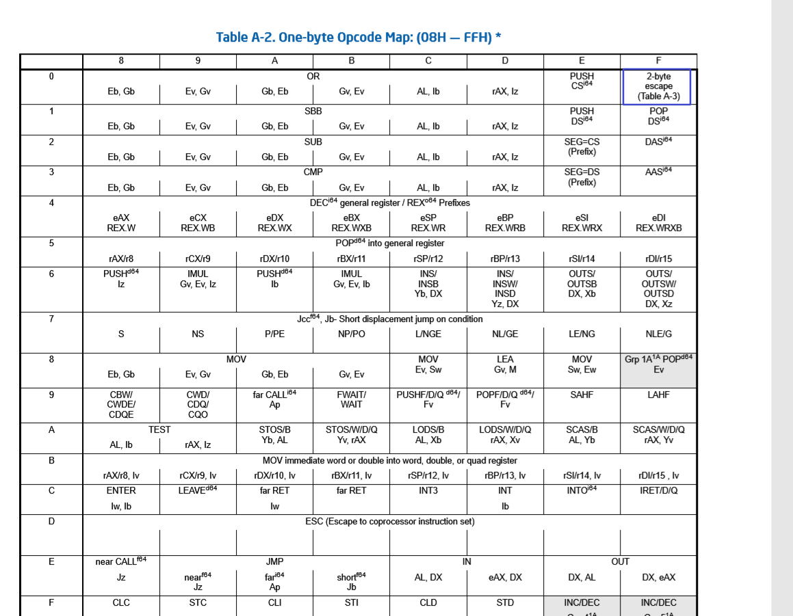
可知这是一个双字节操作数，其实双操作数的第一个字节都是0F，再来查询85，我们使用表Table A-3.two-bytes Opcode Maps。如下图：
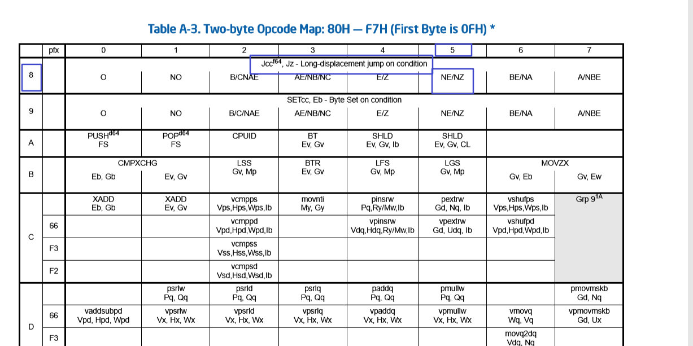
由上图可知这是一个条件跳转指令，而且是长跳转，JCC +NE/NZ=JNE指令。Long型表明跳转地址为四个字节。这里还需特别注意的是：机器码0F85 FA1F0000的四个字节是相对地址，要正确解析出指令还需算出实际的跳转地址。公式为：实际地址=当前地址+指令大小+相对地址。我们用OD实际的运算一下：选定当前的地址是010073ee，则解析后的实际跳转地址=010073ee+6（指令大小为五个字节）+00001FFA= 01008EEE,所以完整的指令解析为：
JNZ 01008EEE。如下图：
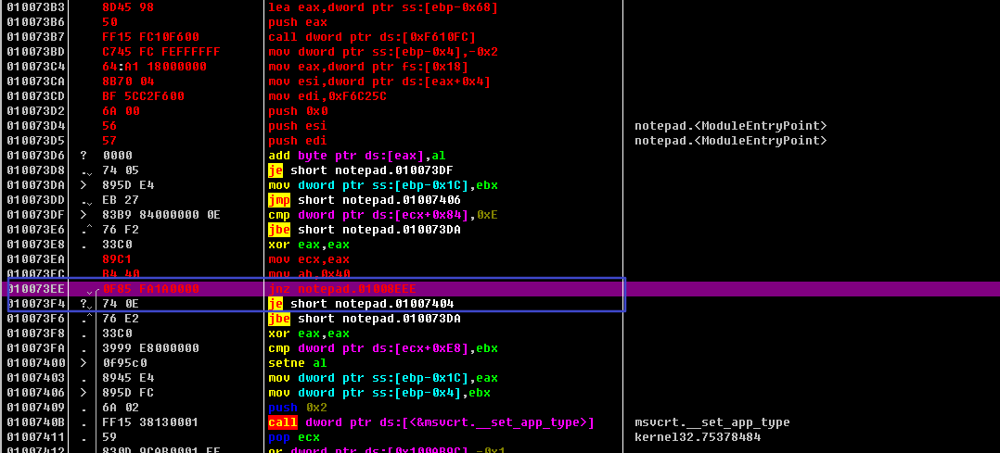
同时含有位移值和立即数的情况
例如指令：C705 00CF4000 01000100
首先解析C7，如下图：
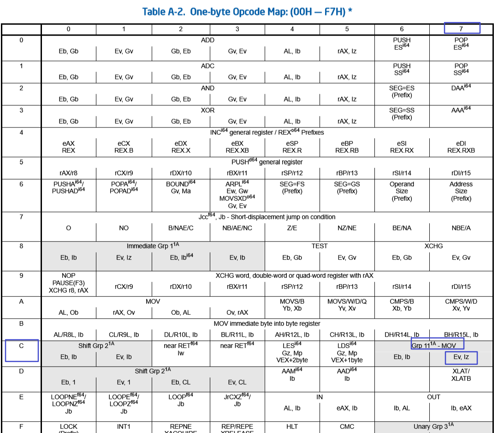
这是一个含有group的指令，ModR/M为05（0000，0101），其中Reg值为：000，根据Reg值查询group表，如下图：
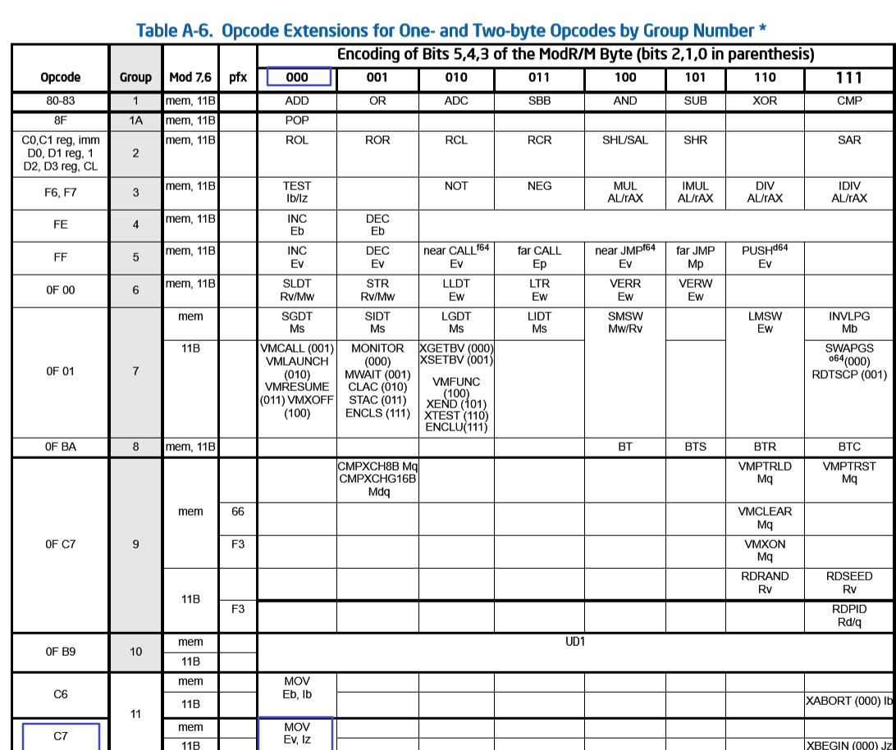
由此可见指令的形式为MOV Ev，Iz,Ev表示使用ModR/M规定的寄存器双字或者内存双字。Iz表示立即数双字。下面使用ModR/M来确定具体的寻址方式，查询ModR/M表，如下图：
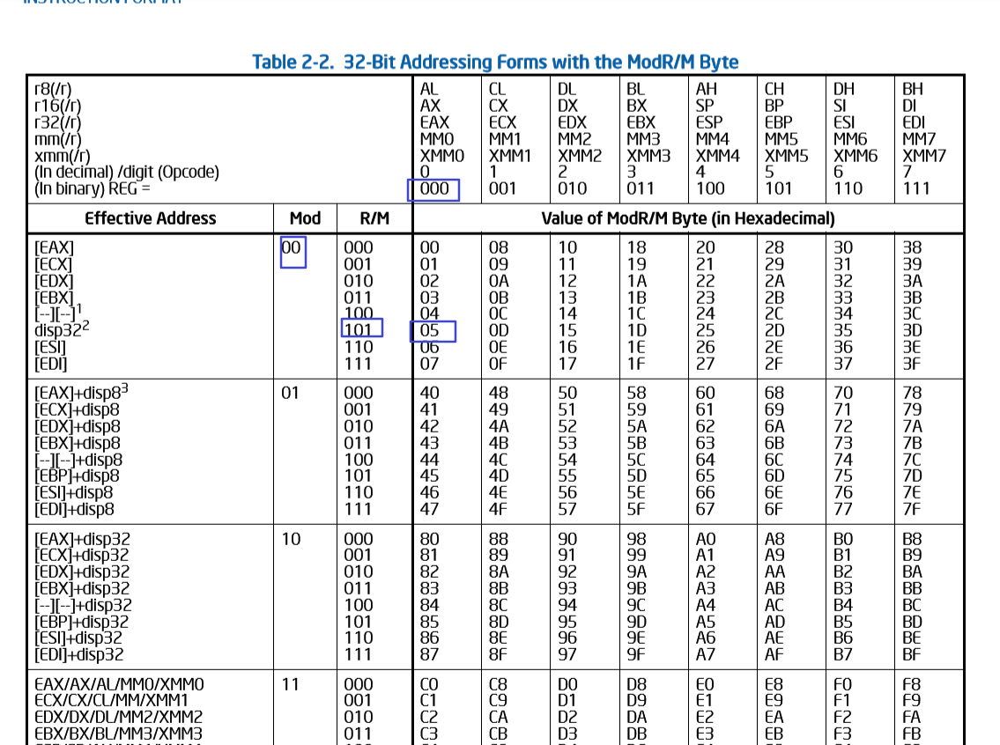
因此第一个操作数使用的32位内存操作数，默认的段寄存器是DS，第二个操作数是立即数。完整解析指令为：Mov DWORD DS:[40CF00],10001.
使用SIB的情况
SIB也是用来辅助寻址的，主要针对基址寻址和基址加变址寻址。
那如何来判断指令是否使用了SIB呢？
且看指令8B0C01 ,先解析8B，如下图：
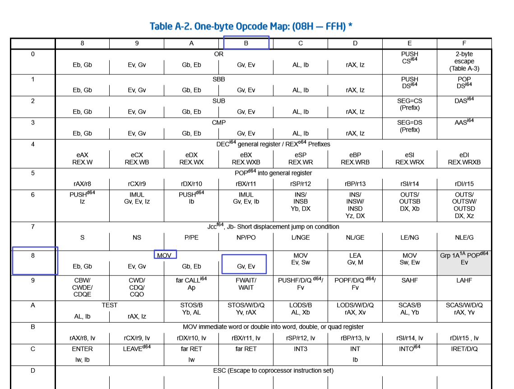
指令形式为MOV Gv,Ev。Gv表示ModR/M规定的双字寄存器数，Ev表示使用ModR/M规定的双子寄存器数或者双字内存数。接下俩解析ModR/M，字段值为0C（00001100），查询ModR/M表可得下图：
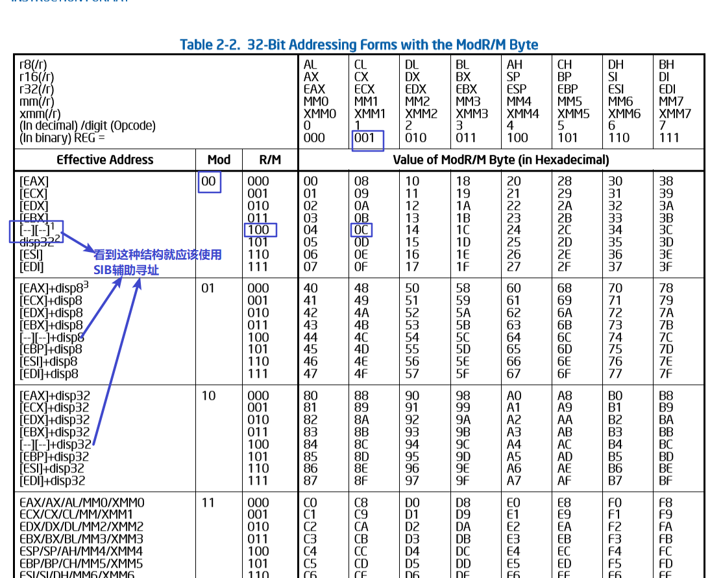
由上图可得指令的基本结构为MOV ECX,[Reg.A+Reg.B]。对于这种结构的寻址方式就要用到SIB辅助寻址，指令中的SIB=01，拆成三个字段scale=00，Index=000，base=001，查询表table 2-3 32-bit Addressing forms with the SIB Bytes如下图:
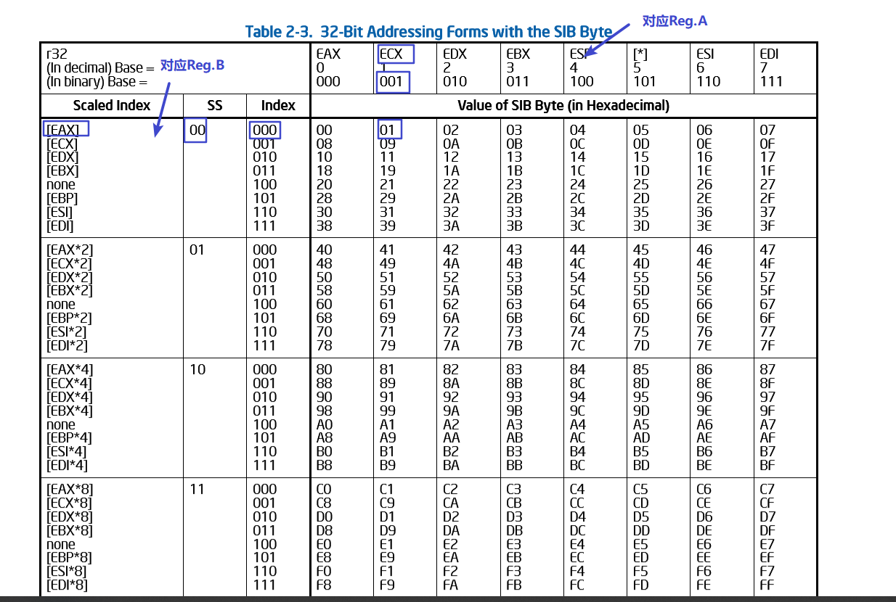
因此完整的解析指令为：8B0C01 MOV ECX,DWORD PTR DS:[ECX,EAX],使用OD验证一下，如下图：
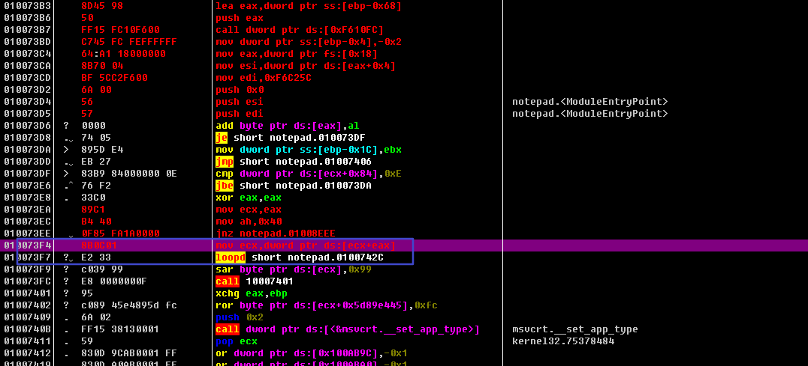
以上就是解析IA-32机器码时会遇到的所有情况，掌握了这些解析机器码不成问题。